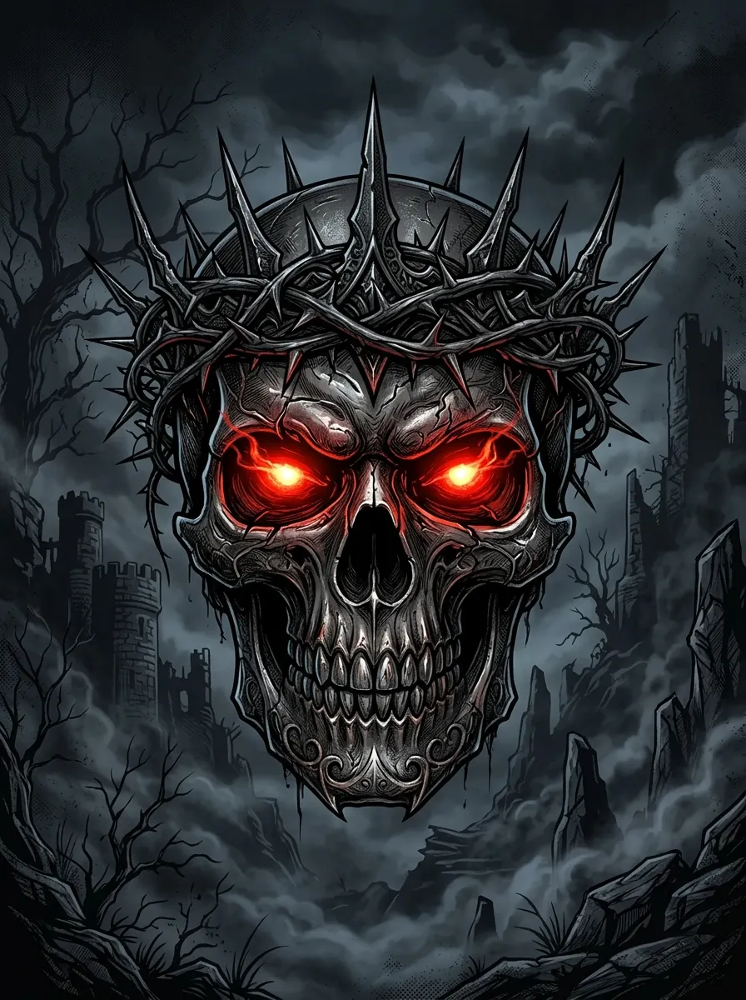
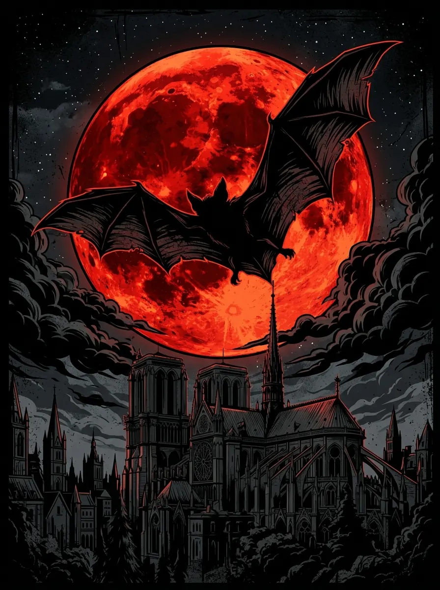
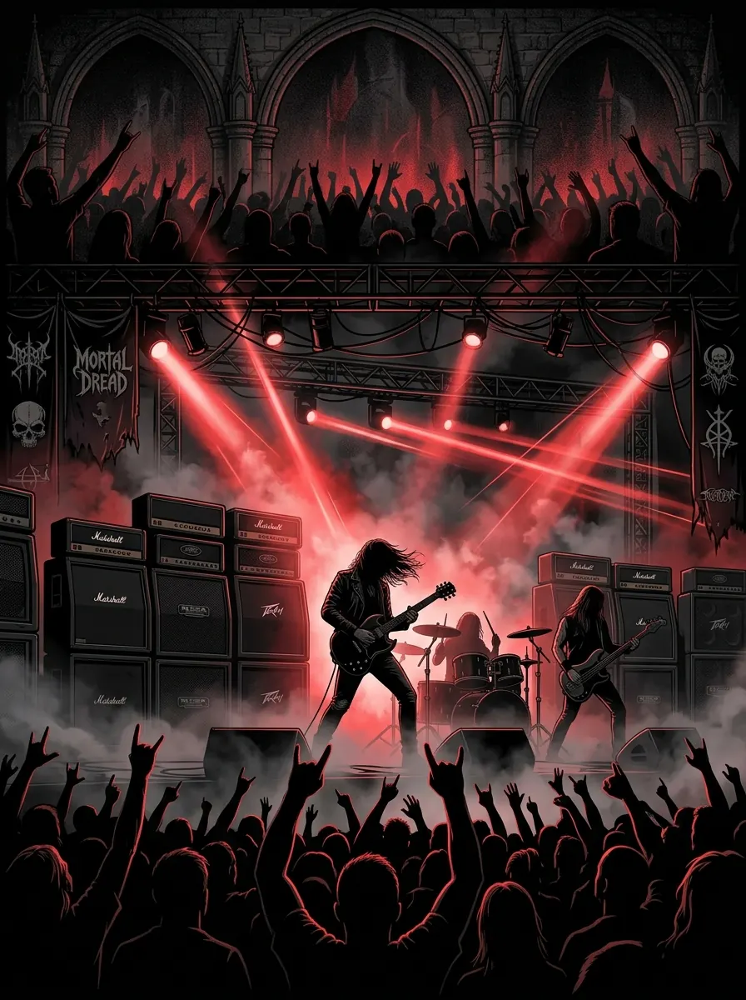
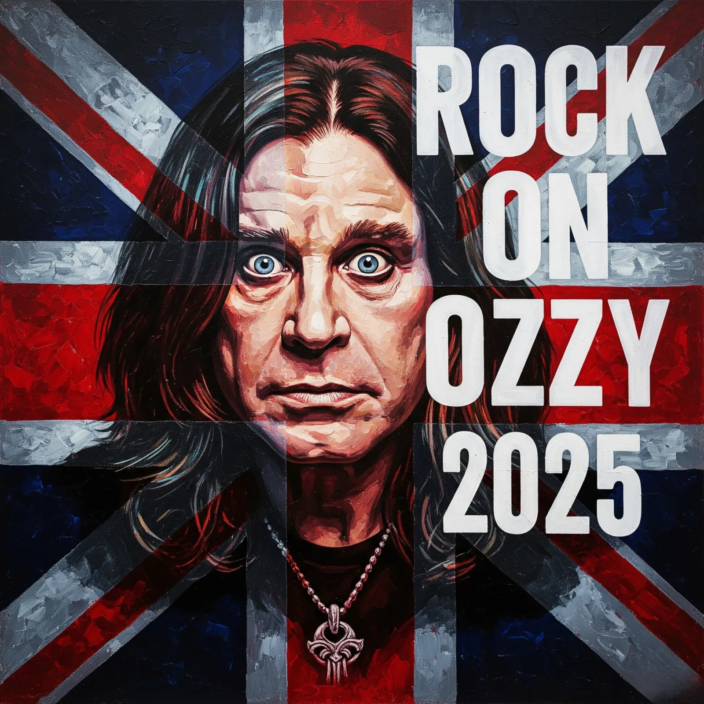
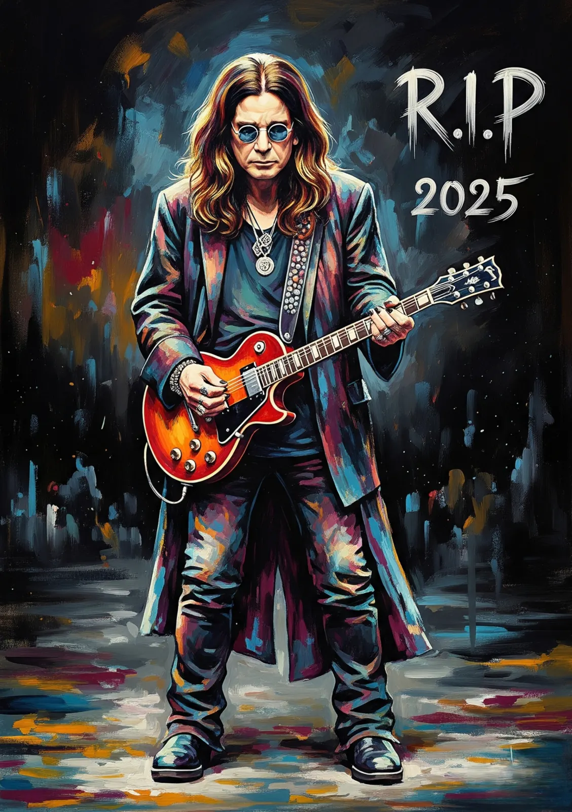

Legendary Legacy
Eine Reise durch die wichtigsten Momente, aus denen Ozzys Erbe entstanden ist.
🦇 0
🔥 Klick oder tippe ins Feuer
Eine Reise durch die wichtigsten Momente, aus denen Ozzys Erbe entstanden ist.
Verbindung von Musik, Bühne und geschichtlichen Höhepunkten in einem stimmungsvollen Erlebnis.
Teste dein Wissen in einer schnellen, intensiven und spannenden Rock-Show mit Highscore.
John Michael "Ozzy" Osbourne wird in Aston geboren. Ein Arbeiterkind, das die Welt verändern sollte.
Die Geburtsstunde des Heavy Metal. Mit düsteren Riffs und Ozzys Stimme beginnt eine neue Ära.
Nach dem Aus bei Sabbath startet Ozzy mit "Blizzard of Ozz" voll durch. "Crazy Train" wird zur Hymne.
Randy Rhoads prägt als Gitarren-Genie den unverkennbaren Sound, bis er 1982 tragisch verunglückt.
In Des Moines beißt Ozzy einer Fledermaus den Kopf ab – aus Versehen, aber legendär für die Ewigkeit!
Ozzy gründet zusammen mit Sharon das legendäre Ozzfest und schafft damit die größte globale Bühne für Newcomer und Giganten des Heavy Metal.
Ozzy wird zum Reality-TV Star auf MTV. Die ganze Welt liebt das Chaos der Familie Osbourne.
Ozzy verlässt die Bühne des Lebens, aber sein Erbe ist in jedem Metal-Riff unsterblich. Forever in our hearts. 🖤






Es brennen 0 Kerzen.
Klick die Kugel für ein Ozzy-Zitat!
Oder drücke Q
Ziehe eine Gabe auf den Altar oder klicke sie an
⬇ Gabe hier ablegen
Spiel Power-Chords mit Maus, Touch oder den Tasten 1–7. Nimm dein eigenes Riff auf!
Bereit zum Rocken.
0 / 0 Erfolge freigeschaltet
Tipp: Manche Erfolge sind geheim. ↑ ↑ ↓ ↓ …